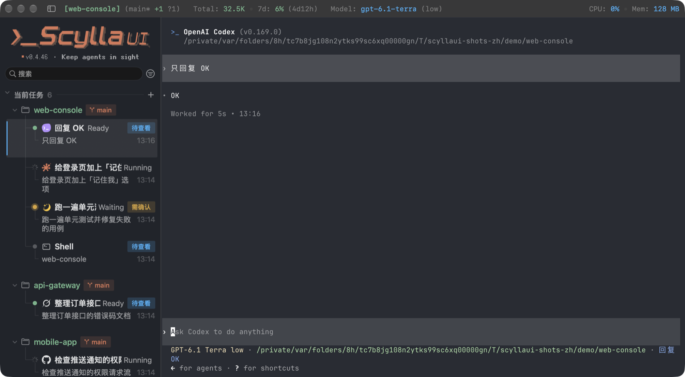
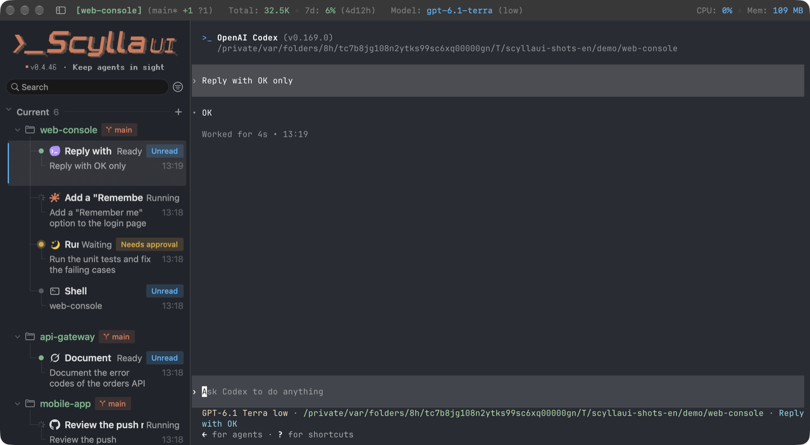

ScyllaUI
Keep agents in sight
为并行运行多个 AI 编程助手打造的原生 macOS 终端。
在几个项目里同时开着多个不同品牌的 AI Agent，最费神的不是写提示词，而是记住哪个在等你。ScyllaUI 把它们和普通 Shell 收进同一个窗口，按 Git 仓库自动归组，实时显示每个 Agent 正在运行、等你批准、已经做完还是出错。不用自己写 Hook，也不靠猜：没有可靠信号时，它会直接标为「未知」。
终端由后台进程常驻托管：退出、更新 App，甚至重启电脑，正在进行的对话都会接回原处。
目前支持 Claude Code、Codex、Kimi Code、Grok Build、OpenCode、GitHub Copilot CLI 和 Antigravity CLI，后续会陆续接入更多 AI Agent。

安装
- 打开下载的 DMG，把 ScyllaUI 拖进「应用程序」。
- 从「应用程序」打开。安装包已用 Developer ID 签名并经 Apple 公证。
- 按引导允许文件夹访问、确认安装状态同步。之后的版本可在 ScyllaUI › 检查更新… 里获取。
ScyllaUI 不自带任何 AI 工具，请先装好并登录至少一款上面列出的命令行工具。
A native macOS terminal built for running many AI coding agents in parallel.
With different AI agents running across your projects, the hard part isn't writing prompts; it's remembering which one is waiting on you. ScyllaUI brings them and your plain shells into one window, grouped by Git repository, and shows live whether each agent is running, waiting for approval, done or failed. There are no hooks to write by hand and no guessing: without a reliable signal, it says "Unknown".
A background process keeps every terminal alive: quit or update the app, even restart your Mac, and your conversations resume where they left off.
Currently supported: Claude Code, Codex, Kimi Code, Grok Build, OpenCode, GitHub Copilot CLI and Antigravity CLI, with more agents on the way.
All releases and notes User guide Source code

Install
- Open the downloaded DMG and drag ScyllaUI into Applications.
- Open it from Applications. The app is signed with a Developer ID and notarized by Apple.
- Follow the first-launch steps to allow folder access and confirm status sync. Later versions arrive through ScyllaUI › Check for Updates….
ScyllaUI does not include any AI tool. Install and sign in to at least one of the command-line tools listed above first.